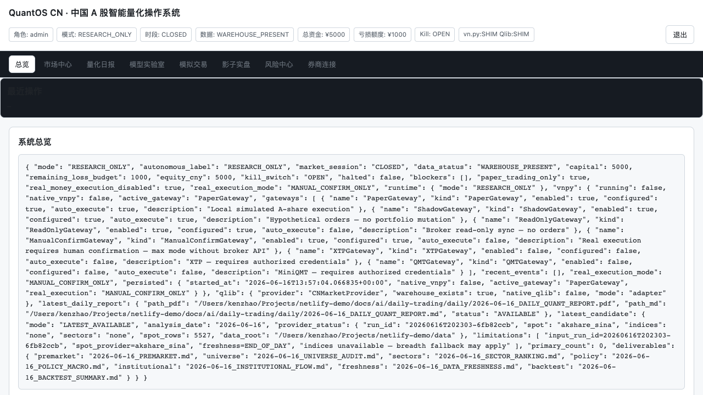
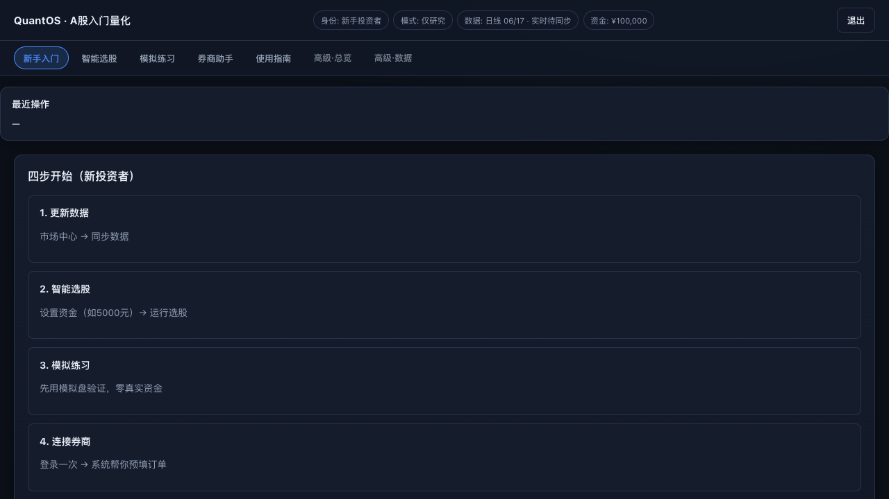
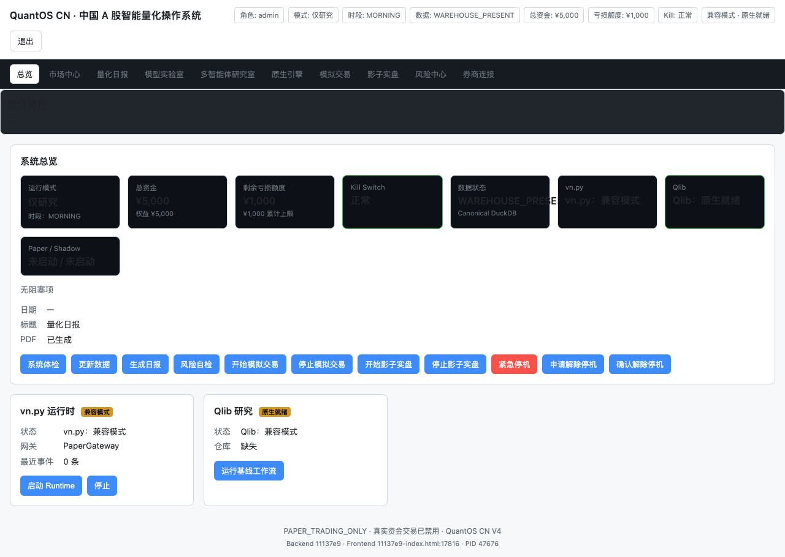
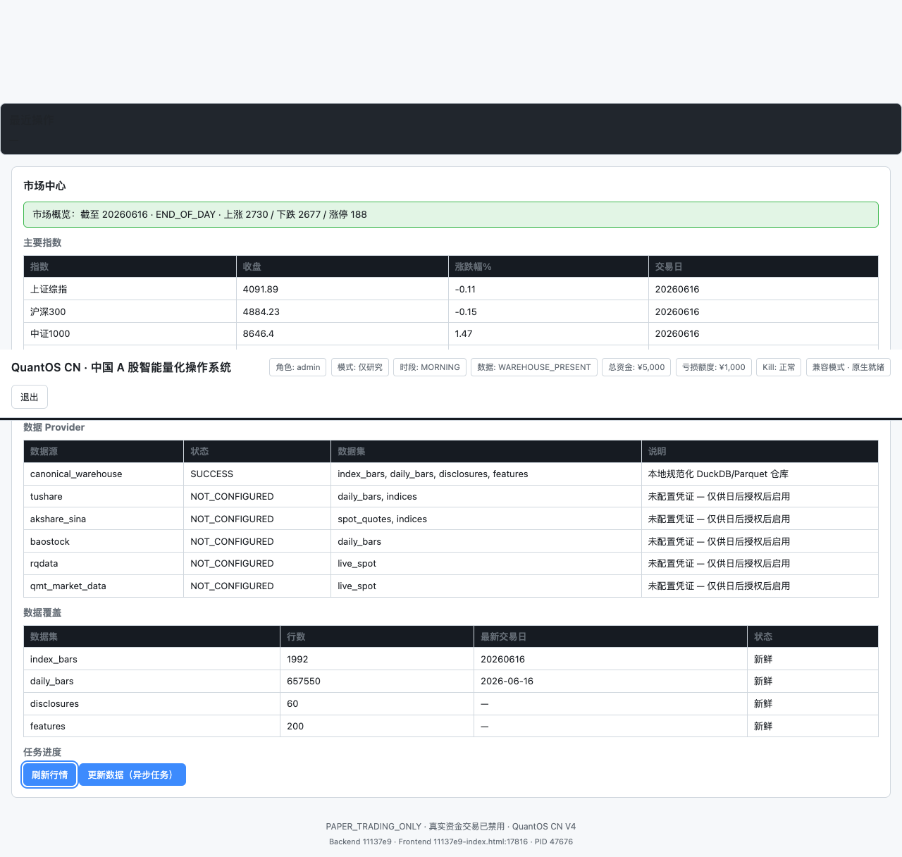
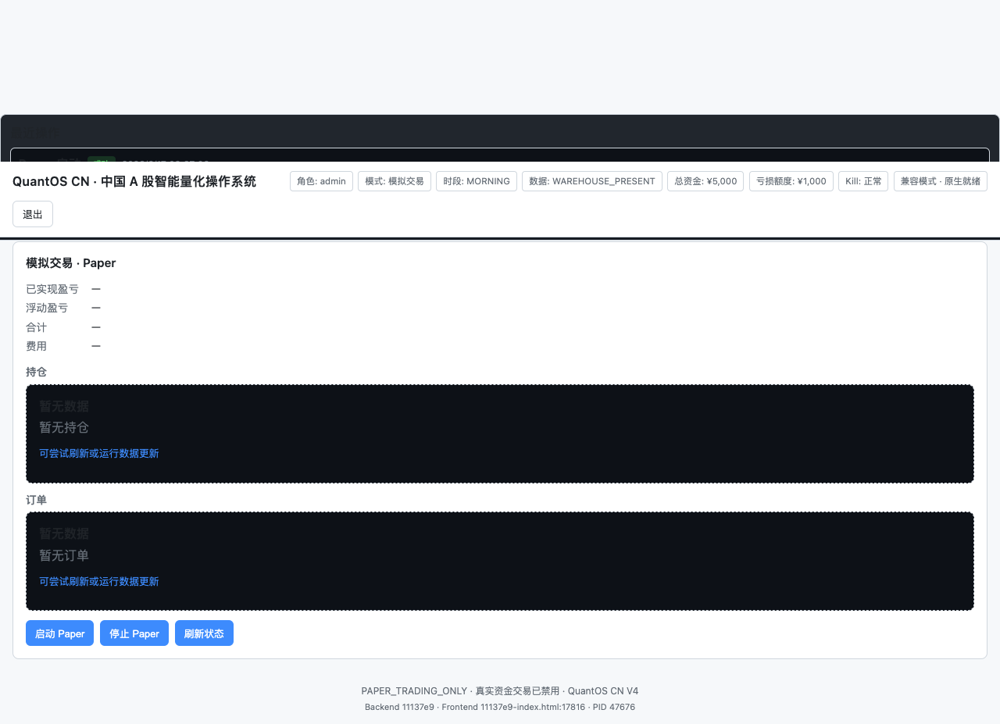
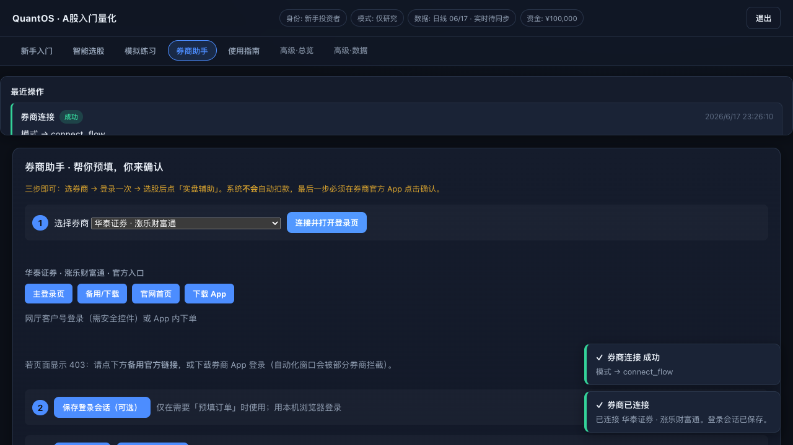
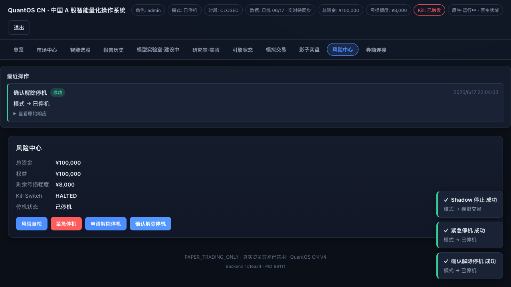
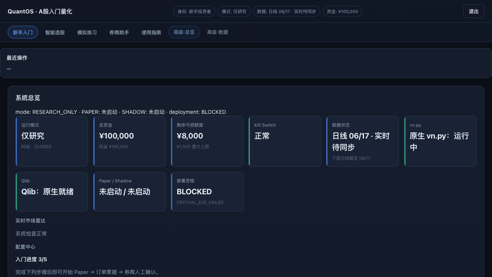

01 产品定位
QuantOS CN 不是云端黑盒投顾，也不是「一键全自动炒股」工具。它是运行在你本机上的量化操作系统：把数据、研究、模拟、辅助实盘串成可审计闭环。
我们解决什么
云端平台逻辑不透明 → 本地 DuckDB + 可解释因子
研究难接实盘 → Paper → Shadow → 订单票据 → 券商确认
小资金难量化 → 按资金算一手、股价区间过滤
全自动风险高 → Kill Switch + 多层门控，无人值守默认关闭
我们不是什么
❌ 不承诺收益 · ❌ 不替你在券商端自动扣款
❌ 不是托管投顾 · ❌ 不保存交易密码
✅ 是研究 + 模拟 + 辅助填单的生产力工具


02 系统架构
单端口 Web 门户 + Python 网关 + 量化引擎 + 本地数据仓库。所有用户操作经 REST API，响应统一 envelope 格式。
flowchart TB
subgraph Portal["🖥️ Portal Web · :8787/portal"]
P1[新手入门]
P2[智能选股]
P3[模拟练习]
P4[券商助手]
P5[高级·数据/模型]
end
subgraph Gateway["⚡ FastAPI Gateway"]
G1[operations.py]
G2[bff_market.py]
G3[Risk + Kill Switch]
G4[Execution Preflight]
end
subgraph Quant["📊 Quant Engine"]
Q1[Screener v5 Ensemble]
Q2[Alpha158-compatible]
Q3[Portfolio Optimizer]
Q4[Validation / Backtest]
end
subgraph Data["💾 Local Data"]
D1[(DuckDB Warehouse)]
D2[Live Snapshot JSON]
D3[Paper State / Ledger]
end
Portal -->|X-API-Key| Gateway
Gateway --> Quant
Quant --> D1
Gateway --> D2
Gateway --> D3
| 层级 | 路径 | 职责 |
|---|---|---|
| 门户 | apps/portal-web/ | 中文 UI、ViewModel、操作盘 |
| 网关 | gateway/api/ | REST、RBAC、审计、Paper/券商路由 |
| 量化 | quant/ | 选股、因子、组合、验证、日报 |
| 数据 | data/warehouse/ | DuckDB 日线、指数、板块 |
| 运行时 | data/gateway/ | Paper 状态、行情快照、订单票据（本地，不上传 Git） |
03 功能全景
从研究到辅助实盘的完整能力矩阵。标注 ✅ 为当前版本已落地能力。
智能选股 ✅
Ensemble 45% ML + 35% 基线 + 20% 风险；收盘/实时双模式；行内可折叠专业解释
Paper 模拟 ✅
T+1、整手、费用模型；真实行情监控自动买卖；收盘 PDF 资金报告
Shadow 影子 ✅
零真实订单；晋级前观察模式
券商助手 ✅
东方财富/华泰/同花顺等；浏览器 handoff；WAF 403 恢复指引
Autopilot 票据 ✅
选股 → 组合优化 → 订单票据；可选无人值守（门控开启时）
量化日报 ✅
Markdown / HTML / PDF；盘前盘后流水线
模型实验室 ✅
Purged K-Fold、样本外、过拟合检测；诚实 NOT_READY 标注
多智能体研究 ✅
政策、板块、个股研究工作流
vn.py / Qlib 适配 ✅
原生隔离环境验收；非替代，是编排集成

04 标准工作流
推荐路径：先 Paper 验证，再人工确认辅助实盘。系统自动拦截未就绪状态下的真实发单。
stateDiagram-v2
[*] --> Research: 安装启动
Research --> DataReady: 更新数据
DataReady --> Screener: 运行选股
Screener --> Paper: 启动 Paper + 导入组合
Paper --> Monitor: 真实行情监控
Monitor --> Shadow: 晋级 Shadow
Shadow --> Ticket: 生成订单票据
Ticket --> Broker: 券商官方确认
Broker --> [*]: 成交对账
Research --> Halted: Kill Switch
Paper --> Halted: 紧急停机
Halted --> Research: 人工解除
- 更新数据新手入门 →「更新数据」或高级·数据 → 市场同步。确认顶栏数据状态为 EOD_OK。
- 智能选股设资金与股价区间 → 收盘模式（约 1 秒）或实时模式（需先刷新行情）→ 查看行内「详情 ▼」解释。
- 模拟验证启动 Paper → 从选股导入组合 → 开启真实行情监控（无报价则不下单）。
- 收盘复盘模拟练习页 →「生成今日收盘报告 PDF」→ 下载资金动向报告。
- 辅助实盘券商助手登录官方平台 → 选股页「实盘辅助」→ 在券商 App 亲自确认。
05 智能选股深度指南
多因子 + Alpha158-compatible 融合引擎。每只股票附带专业因子说明、买卖区间参考、一手建议——均可折叠展开。
flowchart LR
A[DuckDB 日线] --> B[流动性/板块/股价过滤]
B --> C[多因子 Z-Score]
C --> D[ML Ensemble Gate]
D --> E[多样性 Top-N]
E --> F[Enrichment 一手/区间]
F --> G[Selection Guide]
H[Live Snapshot] -.->|实时模式| C
| 模式 | 速度 | 适用场景 | 前置条件 |
|---|---|---|---|
| 收盘数据 EOD | ~1 秒 | 日常选股、新手推荐 | 已更新日线 |
| 实时智能 Live | ~5–30 秒 | 盘中决策 | 先刷新实时行情 |


增强版选股指南（每次运行自动生成）
包含：策略说明、资金与股价过滤摘要、逐步操作指引、术语速查表。适合新手直接跟做。
06 模拟练习 · Paper 操作盘
核心原则：没有真实行情报价，就不模拟成交。Paper 使用新浪/多源实时价做监控与 mark-to-market。
虚拟操作盘
手动模拟下单 · 从选股导入组合 · 按市价刷新持仓 · 成交/订单/持仓全览
实时行情监控
导入组合后自动开启；买入区间/止损/止盈来自选股 trade_zones；60 秒自动轮询（Paper 页）
A 股规则内置
T+1 可卖 · 100 股整手 · 佣金/印花税/过户费 · Kill Switch 联动
收盘 PDF 报告
现金/权益/持仓/操作流水 · 一键生成下载 · 路径 docs/ai/daily-trading/daily/

sequenceDiagram
participant U as 用户
participant P as Portal
participant M as Paper Monitor
participant Q as Live Quotes
participant E as Paper Engine
U->>P: 从选股导入组合
P->>M: 开启监控
loop 每 60s / 手动
M->>Q: ensure_live_quotes(refresh)
alt 无真实报价
Q-->>M: blocked
M-->>U: 提示刷新行情
else 价格在买入区间
Q-->>M: live_price
M->>E: submit(BUY, market_price=live)
else 触及止损/止盈
M->>E: submit(SELL, market_price=live)
end
end
07 券商助手与执行路径
系统生成可审计订单票据，用户在券商官方 App / 网页亲自确认。不保存密码，不绕过券商 WAF。
| 执行路径 | 说明 | 推荐度 |
|---|---|---|
| 浏览器官方页 | 打开 www.18.cn 等官网，用户手动登录 | ⭐⭐⭐ 默认 |
| 订单票据 handoff | Autopilot 生成票据 → 预填参数 | ⭐⭐⭐ |
| Playwright 会话 | 可选；部分券商会 Nginx 403 | ⭐ 进阶 |
| MiniQMT / Sidecar | Mac + Windows VM 远程发单 | ⭐ 专业用户 |
| 无人值守 auto | 须 execution_level≥3 + 全部门控 | ⚠️ 默认关闭 |

08 风控与合规设计
多层防护：研究态默认不可实盘；数据漂移可硬拦截；Kill Switch 一键停机。
flowchart TD
O[下单请求] --> K{Kill Switch?}
K -->|HALTED| X[拒绝]
K -->|OPEN| P{Preflight}
P -->|shadow 未就绪| X
P -->|数据漂移| W[警告/硬拦截]
P --> G{Live Gates}
G -->|real_money OFF| X
G -->|risk 未确认| X
G -->|legal 未通过| X
G -->|unattended OFF| M[人工确认路径]
G -->|全部通过| A[执行路由]

09 可靠度与生产就绪
QuantOS 采用「诚实标注」策略：未通过的门禁不会伪装成 production ready。以下基于 QuantOS Closed Loop 验收报告。
| 门禁项 | 状态 | 含义 |
|---|---|---|
| data_quality | PASS | 数据质量基线通过 |
| data_drift | 需关注 | 特征分布漂移时 disable_live_trading |
| leakage | PASS | 未来信息泄漏检测 |
| rank_ic / purged_kfold | PASS | 因子与验证链 |
| paper_engine | PASS | Paper 引擎验收 |
| ml_ensemble_gate | PASS | ML 失败自动降级基线 |
| production_ready | false | 全量产门禁未全开——诚实披露 |
Alpha158 政策（不可降级）
158 列 alpha158_compatible_v1 完整保留，不因「简化」而替换。ROC 等语义差异已文档化于审计报告，不静默改公式。
自检命令
make doctor · make quantos-closed-loop · make prelaunch · make test
报告：artifacts/QUANTOS_CLOSED_LOOP_REPORT.json · artifacts/final_quantos_upgrade_report.md
10 快速开始
5 分钟从零到第一次选股。
git clone https://github.com/kenzhao0621-tech/netlify-demo.git
cd netlify-demo
make bootstrap
cp .env.example .env # 填入 TUSHARE_TOKEN（推荐）
make app
# 浏览器 → http://127.0.0.1:8787/portal| 角色 | 推荐页面 | API Key 角色 |
|---|---|---|
| 新手投资者 | 新手入门 / 选股 / Paper | investor |
| 量化研究者 | + 模型实验室 / 回测 / 智能体 | researcher |
| 管理员 | 门控 / 审计 / 系统体检 | admin |

11 核心 API 速查
| 端点 | 用途 |
|---|---|
GET /api/v1/screener/run | 运行智能选股 |
POST /api/v1/market/live-refresh | 刷新实时行情 |
POST /api/v1/paper/start | 启动 Paper 模式 |
POST /api/v1/paper/from-screener | 导入组合 + 开启监控 |
POST /api/v1/paper/monitor/tick | 执行一轮真实行情监控 |
POST /api/v1/paper/reports/generate-close | 生成收盘 PDF |
POST /api/v1/brokers/connect-flow | 券商连接向导 |
GET /api/v1/trading/preflight | 实盘执行预检 |
POST /api/v1/risk/halt | 紧急 Kill Switch |
12 常见问题
选股超时？
改用「收盘数据」模式；或先更新日线。实时模式需先刷新行情。
券商 Nginx forbidden？
券商 WAF 拦截公网 IP，非系统故障。用官网/App 登录，勿用自动化浏览器。
Paper 不下单？
监控要求真实报价。先在「市场数据」刷新行情，且价格须落在买入区间。
能否全自动炒股？
默认禁止。无人值守须手动开启全部门控 + Sidecar/QMT，且 drift 可能拦截。
数据存在哪？
本机 DuckDB + data/gateway/。默认 .gitignore，不上传云端。
如何导出 PDF？
模拟练习 → 生成今日收盘报告；或 make daily-report 生成量化日报。
QuantOS CN 为研究与模拟工具，不构成投资建议。历史回测与 Paper 表现不代表未来收益。 真实交易须在券商官方平台由用户本人确认。使用本软件即表示您理解并接受上述限制。